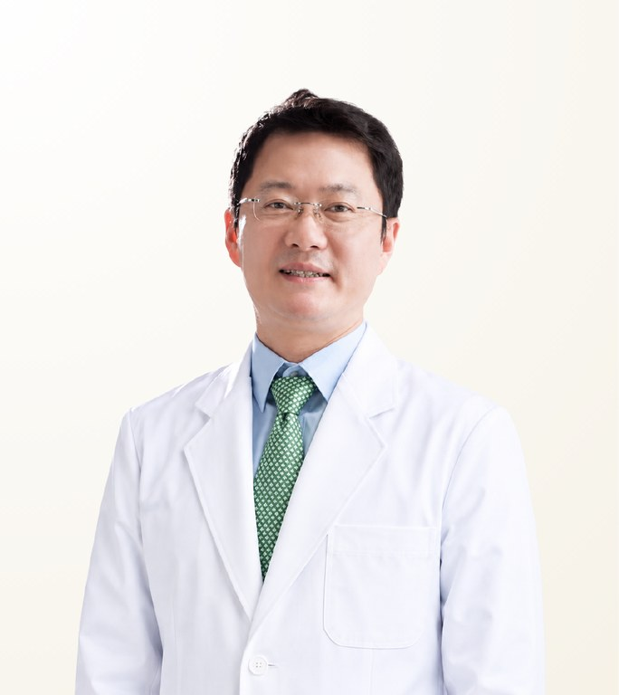

Reviewed by STMSTYLE
Lee Hak-Gyu
อี ฮัก-คยู · 이학규
Gangnam Thema Dermatology · Board-certified Dermatologist
- Refractory Melasma and Pigment Lasers
- Combined Lifting with Ulthera, Thermage and Skin Boosters
- Acne, Scar and Pore Treatment
- Experience
- Around 30 years of dermatology practice at one location in Gangnam
- Clinical experience
- Extensive clinical dermatology experience built over around 30 years
- Recommended Stay
- 1–2 days (a final review before departure is advised)
About the Doctor
Dr. Lee Hak-Gyu is a board-certified dermatologist at Gangnam Thema Dermatology in Gangnam, Seoul, known for laser treatment of refractory melasma and pigmentation and for combined lifting with Ulthera, Thermage and skin boosters. He graduated from Chung-Ang University College of Medicine, holds a PhD in dermatology from the same university, and has practised dermatology at one location in Gangnam for around 30 years. Many Thai people return to him for ongoing care.
Case Expertise
Refractory Melasma and Pigment Lasers
Treatment for melasma and pigmentation that responds poorly to ordinary lasers or recurs repeatedly. The depth and cause of the pigment are assessed first, then laser type and intensity are combined, working to reduce recurrence rather than treating aggressively in one session.
Combined Lifting with Ulthera, Thermage and Skin Boosters
Ultrasound and radiofrequency devices are combined with skin boosters according to skin condition to improve firmness and texture together. No single device is relied upon; each is used only as far as needed.
Acne, Scar and Pore Treatment
Treats acne together with the scarring and enlarged pores it leaves. Active acne and existing scars are distinguished to set the order of treatment, with lasers and procedures applied in stages.
Other treatments available
Materials & Equipment
Video
Philosophy of Care
He believes a dermatologist's skill shows in how well the equipment is understood and handled as an extension of the hand. Rather than the newest device itself, what matters is reading the person’s skin condition accurately and having the technique and judgement to combine laser, radiofrequency, ultrasound and skin boosters only as far as needed. Trust is built through results rather than display, and each person’s skin is managed over the long term, from refractory melasma and pigmentation through to natural lifting. After treatment, progress is followed closely, and any necessary touch-up and aftercare are taken on as a matter of principle.
— Lee Hak-Gyu
STMSTYLE Assessment
Based on more than fifteen years of collaboration and direct personal experience of treatment, STMSTYLE regards Dr. Lee Hak-Gyu as a dermatologist who has built trust through accurate diagnosis and results rather than elaborate explanation. His command of a wide range of laser and lifting equipment, handled as an extension of his own hand, is outstanding, and it is clear why Thai people trust his skill and keep returning to him.
STMSTYLECareer & Training
View full background
Education
- Graduate, Chung-Ang University College of Medicine
- PhD in Dermatology, Chung-Ang University College of Medicine
Licences & certification
- Board-certified Dermatologist
Career
- Dermatologist, Gangnam Thema Dermatology
- Residency in Dermatology, Chung-Ang University Hospital
- Adjunct Professor, Chung-Ang University College of Medicine
Frequently Asked Questions
Is Dr. Lee Hak-Gyu good at treating stubborn melasma?
Yes. Lasers for refractory melasma and pigmentation are Dr. Lee Hak-Gyu's main treatment. He assesses the depth and cause of the pigment first, then combines laser type and intensity, aiming to reduce recurrence rather than treating aggressively in one session. Results vary with each person's skin.
What devices does Dr. Lee Hak-Gyu use for lifting?
Dr. Lee Hak-Gyu uses Ulthera, Thermage, pigment and melasma lasers, and combined laser and skin booster lifting equipment. He does not rely on a single device, combining ultrasound, radiofrequency, laser and skin boosters only as far as each person’s skin requires.
Who might consider consulting Dr. Lee Hak-Gyu?
Dr. Lee Hak-Gyu may be a good fit for people with stubborn or recurring melasma and pigmentation, those who want natural, youthful lifting and skin improvement, and those with acne, scarring or enlarged pores. He manages each person’s skin over the long term.
How long should I stay in Korea for treatment with Dr. Lee Hak-Gyu?
The recommended stay for treatment with Dr. Lee Hak-Gyu is 1–2 days, with a final review advised before departure. The appropriate treatment programme is set after consultation and a skin assessment.
Does Dr. Lee Hak-Gyu perform the treatment personally, and how can I consult through STMSTYLE?
Treatment is performed by Dr. Lee Hak-Gyu himself, and repeat treatment is available. STMSTYLE has worked with him for more than 15 years and coordinates from the first consultation in Bangkok or via WhatsApp through to scheduling at the clinic. The final programme and cost are confirmed after an in-person consultation.
Sources
View sources and review record
| Item | Source | Checked |
|---|---|---|
| Dermatology board certification, education and training | Gangnam Thema Dermatology official doctor profile | 2026-08-20 |
| Doctor introduction video | Official video on YouTube | 2026-08-20 |
| Main treatments and equipment | Clinic information and supplied materials | 2026-08-20 |
| Philosophy of care and approach to care | STMSTYLE direct review through more than 15 years of collaboration and treatment, in-person meetings and Thai care coordination | 2026-08-20 |
Review record · 2026-08-20
STMSTYLE reviewed Dr. Lee Hak-Gyu's profile through more than 15 years of collaboration, in-person meetings, direct experience of treatment and Thai care coordination, cross-checked against the clinic's official profile and official video.